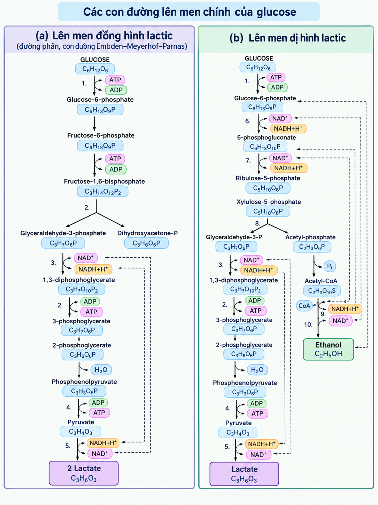

Câu 5. Trong quá trình làm sữa chua,
sữa từ trạng thái lỏng chuyển thành sản phẩm
có vị chua và cấu trúc đặc hơn.
Hãy sử dụng kiến thức Khoa học Tự nhiên
để trả lời các câu hỏi:
a) Xác định vai trò của vi khuẩn lactic
và vẽ sơ đồ minh họa quá trình chuyển hóa
đường trong sữa thành acid lactic.
b) Viết phương trình tổng quát thích hợp
biểu diễn quá trình lên men lactic.
c) Giải thích vì sao sự giảm pH làm thay đổi
trạng thái của protein sữa.
d) Phân tích ảnh hưởng của nhiệt độ và
thời gian ủ đến hoạt động của vi khuẩn
và chất lượng sản phẩm.
Bài làm:
a) Vai trò của vi khuẩn lactic (LAB)
trong quá trình lên men sữa:
-
Tính chất bảo quản của vi khuẩn lactic:
Axit hữu cơ là sản phẩm cuối cùng
của quá trình chuyển hóa carbohydrate
do vi khuẩn axit lactic (LAB) tạo ra.
Các loài LAB lên men đồng hình
(homofermentative) chuyển hóa đường
trong sữa chủ yếu thành axit lactic,
trong khi các loài lên men dị hình
(heterofermentative) chuyển hóa lactose
thành axit lactic, axit axetic, ethanol
và CO2.
Việc sản xuất acid hữu cơ nhanh chóng
giúp làm giảm pH của sản phẩm, qua đó
ức chế sự phát triển của các vi khuẩn
gây hư hỏng và vi khuẩn gây bệnh.
Các chủng vi khuẩn axit lactic (LAB)
phân lập từ sữa tươi của bò, dê và cừu
được phát hiện có hoạt tính kháng lại
4 loài nấm gây hư hỏng thực phẩm:
Penicillium expansum,
Mucor plumbeus,
Kluyveromyces lactis và
Pichia anomala.
Vi khuẩn lactic tiết ra các chất kháng khuẩn
bản chất peptide gọi là bacteriocin
(nisin, bacteriocin,...) là chất bảo quản
sinh học.
-
Sự hình thành hương vị:
Sự hình thành hương vị và các đặc tính
hương vị đặc trưng của từng loại phô mai
được phát triển trong quá trình chín nhờ
hoạt động của cả vi khuẩn lactic khởi động
(starter LAB) và vi khuẩn lactic không khởi động
(non-starter LAB).
Các bước hình thành hương vị phô mai do LAB
thực hiện bao gồm: chuyển hóa lactose,
lactate và citrate; phân giải lipid
(lipolysis) giải phóng các axit béo tự do;
và phân giải protein (proteolysis) –
quá trình phân hủy casein theo sau là
sự dị hóa axit amin.
Hương vị của sữa chua được tạo nên bởi
nhiều hợp chất khác nhau, trong đó axit lactic
đóng vai trò chủ đạo, cùng với các hợp chất
tạo mùi thơm khác (Acetaldehyde, diacetyl,
propanoic acid,...).
-
Cải thiện cấu trúc thực phẩm:
Sữa chua là một sản phẩm sữa lên men đặc biệt,
có kết cấu mềm và đặc hơn so với nguyên liệu
ban đầu là sữa.
Vị chua nhẹ cùng hương vị tươi mát, dễ chịu
đã tạo nên những đặc tính nổi bật của sữa chua
như một sản phẩm sữa lên men độc đáo.
Kết cấu của sữa chua được hình thành nhờ
sự sản sinh exopolysaccharide (EPS) đóng vai trò
là chất tạo độ nhớt – bởi vi khuẩn axit lactic
(LAB).
Ngoài ra, kết cấu này còn được củng cố bởi
quá trình đông tụ, xảy ra do sự trung hòa
các điện tích âm trên bề mặt protein sữa –
một hệ quả khác từ axit do LAB tạo ra.
Việc sản xuất EPS phụ thuộc vào chủng
vi khuẩn LAB cụ thể.
-
Các đặc tính có lợi cho sức khỏe
của vi khuẩn lactic:
Các peptide hoạt tính sinh học được tạo ra
từ quá trình thủy phân casein trong sữa nhờ
vi khuẩn L. helveticus đã được nghiên cứu
và chứng minh có tác dụng hạ huyết áp,
điều hòa miễn dịch, chống ung thư cũng như
khả năng liên kết với canxi.
L. helveticus được biết đến là một trong
những loài vi khuẩn axit lactic (LAB) sở hữu
hệ thống phân giải protein hiệu quả.
Các sản phẩm sữa lên men được ghi nhận là
có tác động tích cực đến sức khỏe con người
thông qua nhiều cơ chế khác nhau.
LAB đứng đầu danh sách các vi sinh vật được
sử dụng trong chế phẩm probiotic.
Sữa chua và các chủng LAB cụ thể đã được
chứng minh là có tác động tích cực hoặc
đầy hứa hẹn đối với sức khỏe; nổi bật nhất
là hiệu quả đối với tình trạng kém hấp thu
lactose – vấn đề bắt nguồn từ yếu tố di truyền
hoặc sự thiếu hụt enzyme lactase.
Nếu lactose đi xuống đại tràng, nó sẽ nhanh
chóng bị hệ vi sinh vật tại đây lên men,
dẫn đến sự hình thành khí.
Chứng bất dung nạp lactose là tình trạng
người bệnh gặp các triệu chứng tiêu hóa như
đầy hơi, tiêu chảy, chướng bụng và nôn mửa
sau khi tiêu thụ sữa hoặc các sản phẩm từ sữa.
Tuy nhiên, những người bị kém hấp thu lactose
thường vẫn dung nạp tốt các sản phẩm sữa lên men,
đặc biệt là sữa chua, mặc dù chúng vẫn chứa lactose.
Lợi ích này đối với quá trình tiêu hóa ở người
đã được khẳng định rõ ràng và có thể được giải thích
bởi sự hiện diện của enzyme
β-galactosidase
(có chức năng tương tự lactase) do các vi khuẩn
S. thermophilus và
L. bulgaricus trong sữa chua sản sinh ra.
Sơ đồ minh họa quá trình chuyển hóa đường
trong sữa thành acid lactic:

Hình 1.
Các con đường lên men chính của glucose.
Ghi chú:
Hiệu chỉnh từ "Major fermentation pathways
of glucose," trong
Lactic Acid Bacteria,
bởi Trần Đình Kiệt, chèn thêm công thức phân tử.
b) Phương trình tổng quát thích hợp
biểu diễn quá trình lên men lactic:
c) Giải thích vì sao sự giảm pH
làm thay đổi trạng thái của protein sữa:
Khi độ pH giảm xuống dưới 5,
các micelle casein (loại protein chính trong sữa)
sẽ mất cấu trúc bậc ba do sự proton hóa
các gốc axit amin của chúng.
Protein đã biến tính sẽ tái cấu trúc thông qua
tương tác với các phân tử kỵ nước khác;
chính sự tương tác giữa các phân tử casein này
tạo nên cấu trúc mang lại trạng thái bán rắn
đặc trưng cho sữa chua.
d) Ảnh hưởng của nhiệt độ và thời gian ủ:
Ảnh hưởng của nhiệt độ ủ:
-
Đối với hoạt động của vi khuẩn:
-
Khoảng nhiệt độ tối ưu:
Mỗi nhóm vi khuẩn lactic có khoảng
nhiệt độ sinh trưởng tối ưu riêng.
Ví dụ: nhóm vi khuẩn ưa nhiệt như
Streptococcus thermophilus
(40–42°C) và
Lactobacillus delbrueckii
subsp.
bulgaricus
(42–46°C) được dùng trong sản xuất
sữa chua;
trong khi nhóm vi khuẩn ưa ấm như
Lactococcus lactis
(28–34°C) hay
Leuconostoc
lại thích hợp cho buttermilk
hoặc phô mai.
Ở nhiệt độ tối ưu, vi khuẩn
hô hấp/lên men mạnh nhất và sự phối hợp
tương hỗ giữa các chủng
(proto-cooperation) diễn ra đạt hiệu quả cao.
-
Nhiệt độ quá thấp:
Làm giảm hoạt tính của hệ enzyme
chuyển hóa, kéo dài pha lag
(pha thích ứng) và làm chậm tốc độ
sinh acid lactic.
Ở một số sản phẩm lên men phối hợp,
nhiệt độ thấp có thể làm thay đổi
sự ưu thế giữa các dòng vi khuẩn.
-
Nhiệt độ quá cao:
Khi vượt quá ngưỡng chịu nhiệt,
vi khuẩn bị ức chế sinh trưởng,
giảm khả năng tổng hợp enzym hoặc
thậm chí bị tiêu diệt.
Nhiệt độ quá cao cũng làm mất cân bằng
tỷ lệ sinh trưởng giữa các chủng
vi khuẩn phối hợp.
-
Đối với chất lượng sản phẩm:
-
Nhiệt độ thấp hơn chuẩn:
Sữa lâu đông tụ, làm tăng nguy cơ
phát triển của các vi sinh vật tạp nhiễm.
Sản phẩm thường bị lỏng, kém chua
và thiếu các hợp chất thơm đặc trưng.
-
Nhiệt độ cao hơn chuẩn:
Quá trình axit hóa diễn ra quá nhanh
khiến mạng lưới gel casein hình thành
không đều, dễ dẫn đến hiện tượng
tách nước (tách huyết thanh sữa),
khối đông bị co rút, sản phẩm có vị
chua gắt hoặc xuất hiện mùi vị lạ.
Ảnh hưởng của thời gian ủ:
-
Đối với hoạt động của vi khuẩn:
-
Thời gian ủ tối ưu:
Vi khuẩn trải qua pha nhân nhanh
(pha mũ), phân cắt đường lactose
thành acid lactic làm giảm pH môi trường
xuống khoảng 4.5–4.7.
Tốc độ sản sinh các chất tạo hương thơm
(như acetaldehyde, diacetyl) đạt mức
bão hòa thích hợp.
-
Thời gian ủ quá ngắn:
Quần thể vi khuẩn chưa đạt mật độ tế bào
tối đa, chưa tích tụ đủ lượng acid lactic
cần thiết.
-
Thời gian ủ quá dài:
Acid lactic tích tụ quá nhiều gây ra
hiện tượng tự acid hóa (autoacidification),
kết hợp với sự cạn kiệt chất dinh dưỡng
làm pH giảm sâu, gây suy giảm mật độ
tế bào vi khuẩn sống.
-
Đối với chất lượng sản phẩm:
-
Ủ chưa đủ thời gian:
pH chưa giảm đến điểm đẳng điện của casein
(pH ∼ 4.6), làm sữa chưa đông tụ hoàn toàn
hoặc cấu trúc gel bị lỏng lẻo, sản phẩm
có độ chua thấp và hương thơm yếu.
-
Ủ quá thời gian:
Sản phẩm bị quá chua (quá acid),
phá vỡ cấu trúc mịn của gel protein
làm nứt khối đông, chảy nước nghiêm trọng
và giảm rõ rệt giá trị cảm quan
của người tiêu dùng.
Tài liệu tham khảo
-
Vinderola, G., Ouwehand, A.,
Salminen, S., & Von Wright, A. (2024).
Lactic acid bacteria.
https://doi.org/10.1201/9781003352075
-
Chen, C., Zhao, S., Hao, G.,
Yu, H., Tian, H., & Zhao, G. (2017).
Role of lactic acid bacteria on the yogurt flavour:
A review.
International Journal of Food Properties
,
20(sup1), S316-S330.
https://doi.org/10.1080/10942912.2017.1295988
-
Widyastuti, Y.,
Rohmatussolihat, &
Febrisiantosa, A. (2014).
The role of lactic acid bacteria
in milk fermentation.
Food and Nutrition Sciences
,
05(04), 435-442.
https://doi.org/10.4236/fns.2014.54051